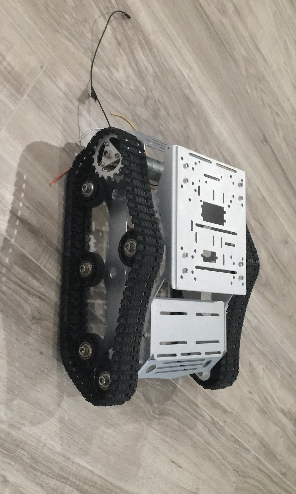
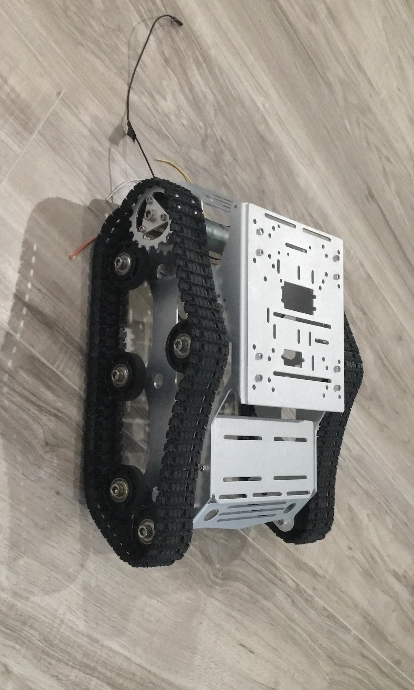

The main idea of this page is to have you either get insparation from my project, contribute, or satiate your curiosity on the big project I've been working on. Thank you for viewing my project!
This project has taken years to eventually get where I am right now, but what is this? This robot is going to be the future of technology. This robot will be able to listen to an app for you asking it to do the dishes find where the kitchen is, find where the dishes are, and complete the task almost exactly how a real butler would. Do you want to help make tons of masks for your kid on their birthday while actually spend time with them? The robot has a feature to do custom tasks for you and repeat those tasks. I’m hoping with this technology to accomplish two different tasks. The first task being, to allow people to get to what they want to the most. If you’re like me you understand it’s hard to find a lot of time in the day because of mundane chores, and instead this robot could work on those for you while you go on a hike with your family. The second task I’m hoping to accomplish is to hopefully work on even more fun and experimental technologies in the future. The main idea is to show this to anyone and hopefully either inspire them, or have a mutually beneficial idea of how to improve this design. Thank you for checking out my project!
This is by far the most complicated part of the robot. Although I only started this a few months ago I’ve made some progress on a pre-generated model that has the resources to identify if you are giving a thumbs up. With this basic understanding of models and a lot of help from a group at BYU-I called AI society I’m getting this done at quicker speeds than originally thought. My main idea for training an automatic and custom model is for the user or anyone working in this project to tell the AI a word. This word will be placed in google search images and the robot will “grab” these images. It will check one by one until it has a basic and good idea of what the word to image comparison are. This will make the least amount of human interaction necessary. I’m hoping in the future this AI will generate ideas of objects itself and have humans check for basic maintenance of said model. The main idea is to study neural networks and specifical convoluted frame networks. Once the robot views objects under multiple frames it can narrow down what this object is.
The robot chassis (prototype) is going to simply be a tread design of which I’ve already ordered. Treads are the most versatile and cheap to use of most designs. There is a design available from Boston Dynamics that is a chassis comprised of a four-legged animal called spot. This is also around 65,000 dollars which surprisingly is not in budget. In the future I’m hoping to make a similar design but cheaper and most likely not as accurate.
The computer I’m using for this is a micro desktop called bee link mini pc. To fit the processing of the AI object detection I’m using a graphics card stander. This allows me to attach a 1080 graphics card to this mini pc and process object detection. What will happen if I don’t use a graphics card with this computer? It will slow down the robot vision to about 8 frames per second making this very inaccurate and most likely barely usable. I’m hoping to create or use a server to communicate with the robot and do the vision object detection training, while on the robot side it will take pictures, map area with ultrasonic sensors, and use object detection when not “learning’. This will create a dynamic where the robot doesn’t need to sit down and process objects for hours in order to do the next tasks. It will simply ask the user for a different task while it’s waiting for the server to upload the information on that object/ task.
For the first script that will activate once the user opens the app it will send the appropriate message to the Bluetooth and this will let the computer know to activate a script I made called autoConnect.sh. This will just automatically bind with the Bluetooth connection. This is unfortunately unsecure as this does bypass a security feature in linux and almost every other OS, but I’m not sure how to bind the phone without user interference otherwise. The second script that will run is a python file called BT7.py, this will constantly be asking the user to give this information. It will run in the background in the future to be more automated. So far, I only have a basic code written out to communicate with Arduino (or any other micro controller), but this isn’t very complicated and I will most likely finish this up towards the end of my project.
This activity is the first activity to pull up, even before the main menu. Even though main menu is the hub of options the robot needs to make sure to connect first. In this activity it will search for a Bluetooth connection advertised as Robot. When it finds this sit will ask for the appropriate response back. If it gets this response, it will automatically connect and send you to the next page (main menu). This was the hardest to design visually, this spinning loading animation was worked out with a native loading gif type from android studio, and this would replace that icon with an X or a check mark. This also allows the users to find what they needed for connection.
In the main menu I was hoping this would help the user with a guide of options the remote control, chat bot, help page and update page. The buttons each ask for an “intent” of each activity. Once it calls the intent of the activity this will pull into that same activity. The main purpose of this is to act as a hub of options for communication with the robot. In the visual design all the buttons were pulled from native options of android studio.
First in the code it calls the BluetoothConnection Java class. When this is called, it will relate to the robot automatically. With the remote app the buttons simply push commands to the python script running the robot. Most of the work in this aspect was in the design of the app making sure this looked aesthetically pleasing. The buttons were from JPGs I found to create a remote format. I made sure that this was using the constraint layout. This allows the visual design to fit on most if not all screens for android.
This was the simplest to design visually and on a more software-oriented side as well. The only purpose of this page is to state common Q and As and eventually have a help line/ chat page. Suggestions would be much appreciated if you think I need to help add more clarity to this app.
This is the busiest and involved for the user, but also hopefully the main use of this app. With this page you can send or receive a message and pictures. The user can take a picture and send this to the robot through Bluetooth this allows the AI to try and understand what the user wants it to interact with. The backend code is a lot more complex this connects automatically with the Bluetooth Connection Java class. When the user takes a picture, it will break this into something called a bitmap and user base 64 to send an encrypted message through Bluetooth. When the robot sends a picture it deciphers this and sends it into a bitmap to display to the user. The messaging works the same, except it doesn’t need to use or finalize using a bitmap. User interface has small updates at the top a text-box and camera to respond and box where pictures the robot sends are received.
The Bluetooth server method that I used throughout this project has been the only method that’s worked to connect with a python script. This has one limitation which is it can’t constantly be listening to the client side of the Bluetooth server. To combat this, I’ve made an update page. This will allow the user to investigate past messages that the robot has sent and respond at their earliest convenience. One the update app opens it will ask for all messages these will come pouring from the robot or client side. The visual design is to use the list view native android studio list portion. This allows the user to scroll through the list is it’s too long to fit on the screen.
This class is the backbone of the entire app, this stores all the methods used to connect, send, and receive information through Bluetooth. This creates a Bluetooth socket which asks for a device Bluetooth address, and a port. With a custom method I’ve created this creates a stable connection and you can send and receive information from this method as well with methods called input and output stream. As mentioned previously this is unfortunately not something that can listen constantly for client side information, to combat this I have made an update page to receive any further updates. If anyone knows something that might be better, I’m absolutely open to ideas
Pictures to use:

.png) 
